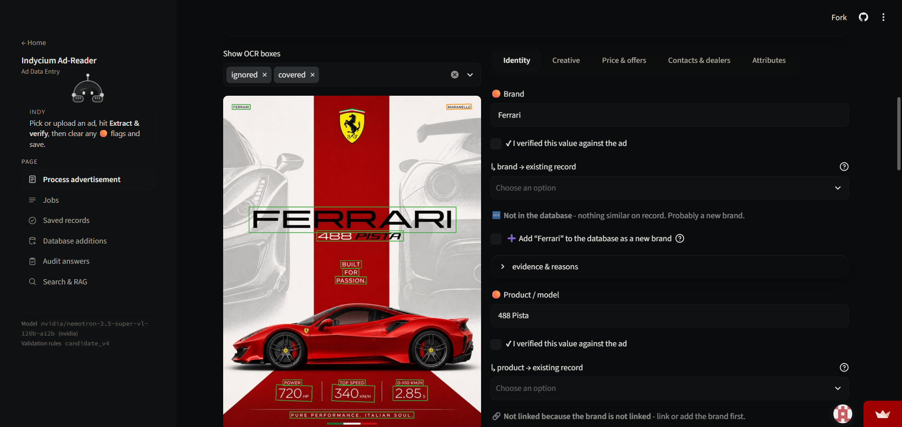
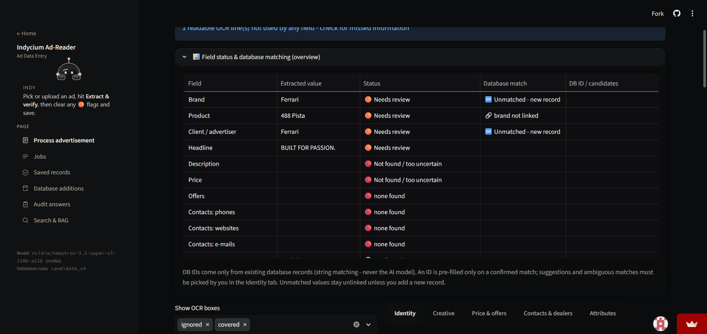
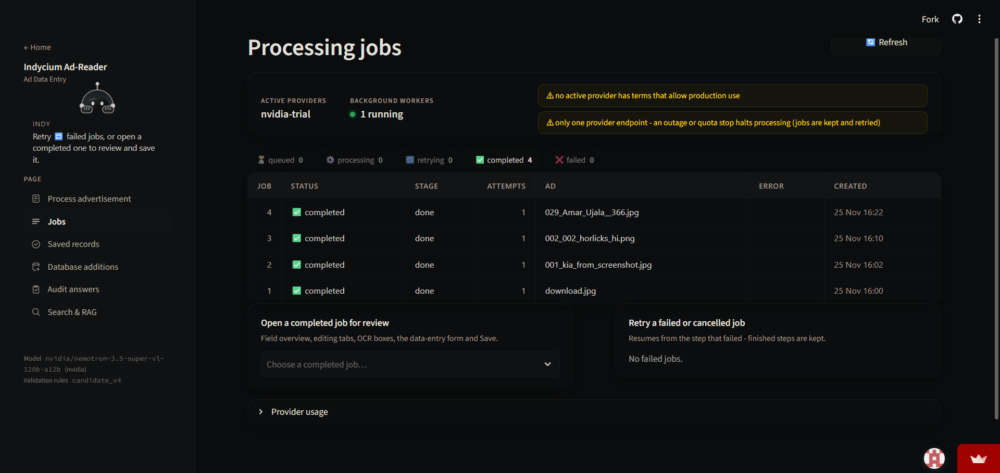
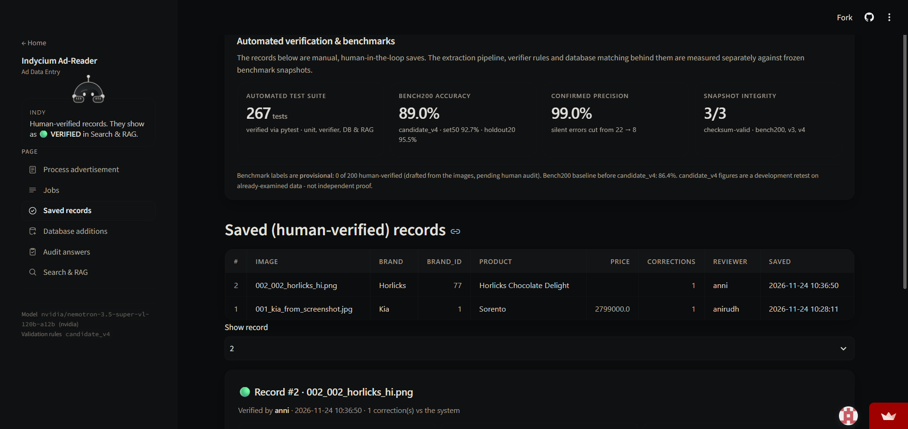
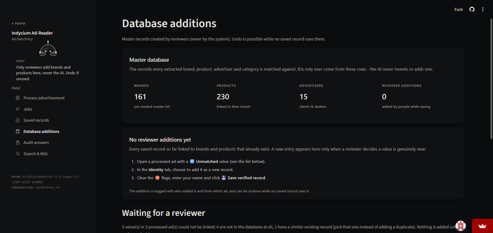
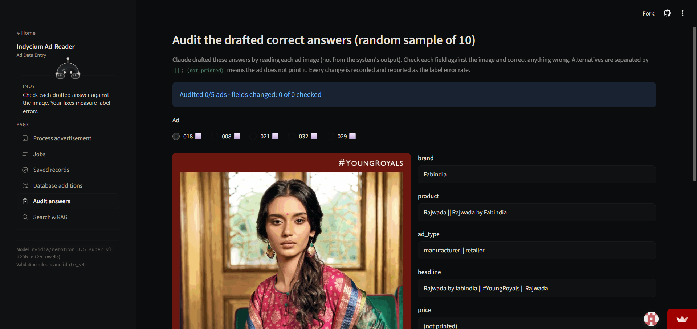
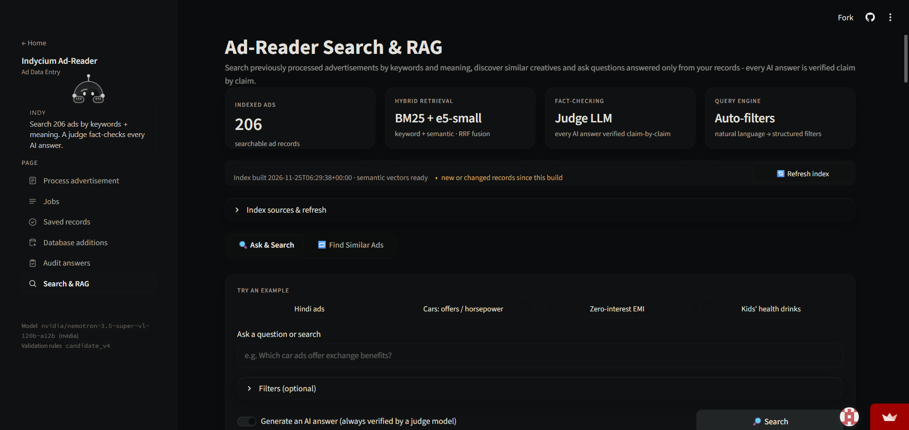

Advertisement data entry is slow and error-prone: an operator reads each ad and retypes brand, product, headline, prices, offers and contact details, then looks up the matching IDs in a master database. Ads arrive in many formats and in English, Hindi, Marathi and other Indian scripts.
Objective: automatically extract a structured record from an ad image, link it to the master database without ever guessing an ID, and send only uncertain fields to a human reviewer — so the data is fast to produce and safe to trust.
If the live app shows “This app has gone to sleep”, click Yes, get this app back up! — it restarts in about a minute.
Honest caveat: benchmark labels are provisional — drafted from the images before system output was
seen and pending human audit (0 of 200 bench200 labels human-verified). candidate_v4 figures are a development retest
on already-examined data, not independent proof. Source: MODEL_COMPARISON.md, releases/.
Candidates were compared on accuracy, processing speed, infrastructure and cost. Every number below is
copied from MODEL_COMPARISON.md, docs/EVALUATION_REPORT.md and releases/; anything not measured is labelled as such.
| System | Accuracy | Speed | Infrastructure | Cost & verdict |
|---|---|---|---|---|
| NVIDIA two-model pipeline Nemotron-3.5-Super-VL (120B-A12B) extractor + Nemotron-3-Nano-Omni (30B-A3B) reasoning verifier + RapidOCR |
bench200 89.0% (v4) set50 92.7% · holdout20 95.5% confirmed precision 99.0% |
~22 s median per vision-model call; ~40–60 s per new ad end to end | Hosted NVIDIA API Catalog; app runs on a CPU-only host — no GPU | $0 on the NVIDIA trial Recommended |
| OCR + rules (no vision model) | set50 45.5% · holdout20 46.2% silent errors 46.3% / 23.7% |
OCR only (laptop CPU) | CPU only | Free Baseline only |
| RapidOCR (PP-OCR on ONNX Runtime) | Facts read verbatim 29/43 (67.4%); headline words 87.5% (holdout20) | 13.8 s / ad (laptop CPU) | CPU; Latin, Devanagari, Tamil, Telugu, Kannada | Free, open source Chosen OCR layer |
| PaddleOCR (native) | Facts read verbatim 28/43 (65.1%); headline words 85.5% (holdout20) | 91.7 s / ad (Kaggle CPU — different hardware) | CPU; ran out of memory at 4000 px; no Bengali / Gujarati model | Free, open source Not adopted as fallback |
| Qwen3-VL (4B) / Qwen2.5-VL (3B) | Not measured — the free Kaggle GPU job stayed queued and the CPU runs produced no output | Not measured | Open weights; self-hosting needs a GPU. Harness ready (kaggle/qwen_extract.py, run_eval.py ingest) |
Not measured Future: different-vendor verifier |
| Metric | Frozen baseline | candidate_v3 | candidate_v4 |
|---|---|---|---|
| Accuracy | 86.4% | 87.0% | 89.0% |
| Silent errors (wrong value auto-confirmed) | 22 | 8 | 8 |
| Confirmed precision | 97.2% | 99.0% | 99.0% |
| Auto-fill rate | 54.7% | 54.7% | 54.6% |
| Error catch rate | 87.8% | 95.3% | 94.8% |
| Over-flag rate (correct values sent to review) | 35.5% | 35.9% | 37.9% |
| Missed values | 39 | 39 | 23 |
The models are identical across systems; the gains come from validation rules applied to the same model outputs. Frozen baseline: English ads 88.8% vs regional-language ads 86.0%; phones 97.2% precision / 100.0% recall, websites 96.7% / 96.7%, e-mails 100.0% / 96.0%.
| Field | Values | v3 accuracy | v4 accuracy | v4 silent errors |
|---|---|---|---|---|
| ad_type | 200 | 83.0% | 88.5% | 2 |
| brand | 200 | 88.0% | 91.0% | 0 |
| category | 198 | 94.4% | 94.4% | 2 |
| headline | 199 | 70.4% | 71.9% | 2 |
| language | 200 | 92.5% | 95.0% | 2 |
| price | 199 | 91.0% | 95.0% | 0 |
| product | 200 | 77.0% | 77.0% | 0 |
| qr_code_present | 200 | 100.0% | 100.0% | 0 |
| sub_headline | 18 | 83.3% | 83.3% | 0 |
Design rule throughout: the AI proposes; deterministic checks and a human decide. No value is auto-confirmed without printed evidence, and no database ID is ever produced by a model.
releases/ verified against its SHA256SUMS.The system was evaluated in stages — from a 50-ad proof of concept, to unseen ads, to a 200-ad multi-industry, multi-language benchmark — and protected by an automated test suite.
Languages (13): English 71 · Hindi 66 · Marathi 15 · Malayalam 9 · Tamil 7 · Kannada 7 · Telugu 6 · Bengali 5 · Odia 4 · Punjabi 4 · Gujarati 3 · Urdu 2 · Manipuri 1.
Top industries: FMCG 41 · Healthcare 32 · Automobile 21 · Fashion 16 · Electronics 15 · Banking & Finance 15 · Education 13 · Jewellery 8 · Real Estate 8 …
Sources: Navbharat Times, Amar Ujala, Maharashtra Times, Dainik Bhaskar and MAdVerse sets. 400 downloaded Hindi/Marathi ads de-duplicated to 304 distinct creatives; none overlap set50/holdout20.
bench200_frozen, candidate_v3, candidate_v4 — checksum-verified against SHA256SUMS.Screens from the live deployment on Streamlit Community Cloud. Each shows part of a page.







git clone https://github.com/anni88git/ad-reader.git cd ad-reader python -m venv .venv .venv\Scripts\activate # Linux/macOS: source .venv/bin/activate pip install -r requirements.txt copy .env.example .env # add your own NVIDIA_API_KEY (never commit it) streamlit run app/streamlit_app.py pytest -q # 267 tests
An optional separate worker runs with python scripts/worker.py; otherwise the app starts one in-process. OCR models and the e5 embedding model (~118 MB) download automatically on first use.
anni88git/ad-reader, branch main, main file app/streamlit_app.py, Python 3.12); redeploys automatically on every push.Dockerfile (Python 3.12-slim, port 7860) runs the same app anywhere Docker does.| Case | Typical time |
|---|---|
| Demo samples with saved results (Kia, Horlicks, Namaste) | ~5–10 s — saved OCR + extraction reused; verifier and checks run |
| A new ad (upload) | ~40–60 s — CPU OCR, cloud vision model (median ~22 s per call), verifier, checks |
| First action after a cold start | A little longer while OCR / embedding models finish downloading |
| Path | Contents |
|---|---|
adreader/ | Pipeline: OCR, extraction, verifier, validation rules, matching, jobs, RAG |
app/ | Streamlit UI — landing page, main app, Search & RAG page, theme, mascot |
scripts/ | Worker, evaluation, reporting and keep-awake scripts |
tests/ | pytest suite (267 tests) |
releases/ | Frozen benchmark snapshots with SHA256SUMS |
data/ | Master database, drafted labels, search index, sample ads and demo caches |
docs/, reports/ | Evaluation report, bench200 report, screenshots and this report’s source |